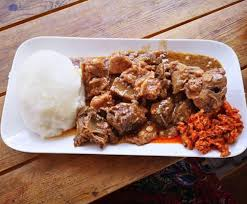

Our Cowhead & Pap Recipe

Our Cowhead & Pap Dish.
This is our Cow head and pap dish, a dish
inspired by the Zulu culture with a bit of our
magic touch and enjoy.
Ingredients of our Tasty Dish
These are the ingredients of our tasty dish.
- 1 cow head, deboned and cleaned
- 2 tbsp oil
- 3 tbsp BBQ spice
- 1 onion, diced
- 1 green pepper, diced
- 3 tbsp brown onion soup
- salt to taste
Steps of making our Tasty Dish
Here are the steps you can use to spin up
this lovely african inspired dish enjoy.
Method
- Clean the meat and wash off any access. Put the meat into a pot
then add the onion and green pepper. Rub the meat in the salt
and BBQ spice.
- Do not add any water just the residual water from when you were washing
and cleaning the meat. Cook the meat on medium to high heat for 3-45 minutes.
Reduce the heat to low then cook for a further 1 hour 30 min.
- Add half of the brown onion soup in the last 10 minutes of cooking.
- You do not want the soup flavour to overpower the meat flavour.
- Only add more if desired. Serve hot with pap or steamed bread.
Home